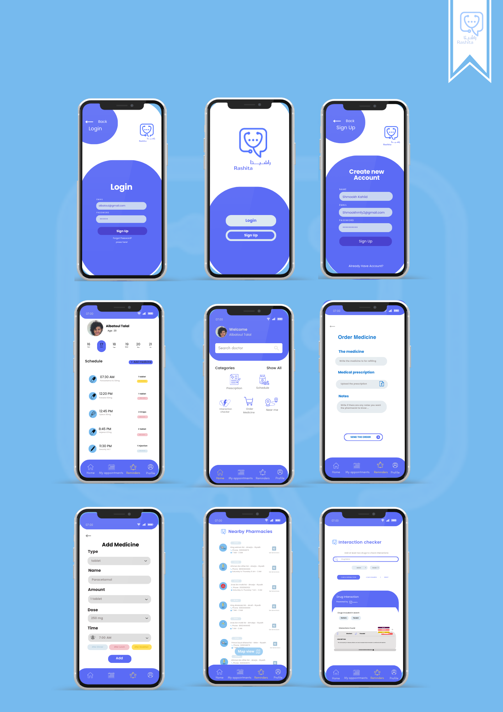
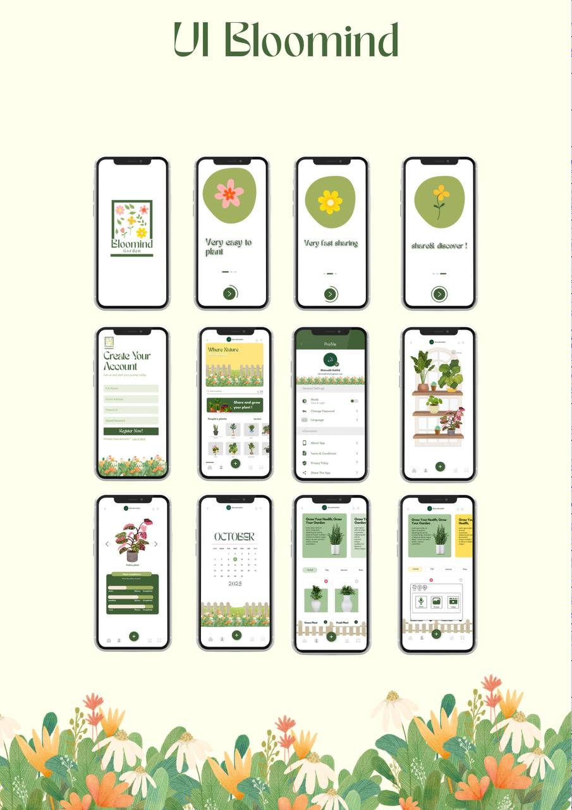
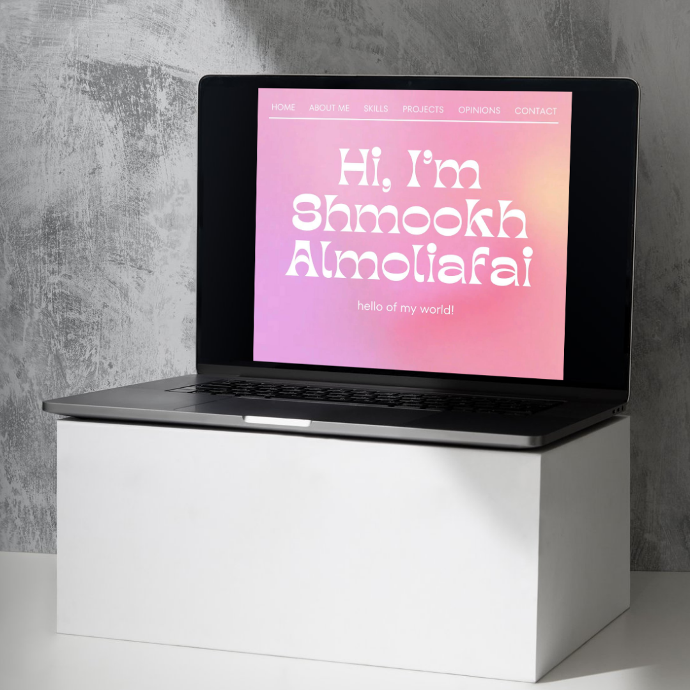

Project 1: Rashita – Smart Medication Management System
This project is a mobile healthcare application designed to help users manage their medications safely and efficiently.
It includes medication reminders, drug interaction detection, pharmacy locator using GPS,
and online medicine ordering with order tracking.

Selected interface screens from the Rashita project
Bloomind Garden is a mobile application concept designed to support mental well-being through reflection.
Users record positive memories using text, images or voice notes, which grow into flowers or trees in a virtual garden representing emotional growth over time.

Selected interface screens from the Bloomind Garden HCI project
This project is my personal website where I showcase my work, projects, and creative designs.
The website presents a collection of my academic projects, technical skills, leadership experiences,
and a brief introduction about myself. It reflects my interests in design, technology, and software development.

Preview of my personal portfolio website and selected works